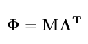

Return coefficient matrix (lambda) of n-th order Legendre polynomials. Scaling method implemented by Gengler et. al. (1999) converts constant Legendre polynomial coefficients into 1.
> legendre(4, gengler=FALSE)
[,1] [,2] [,3] [,4] [,5]
[1,] 0.7071068 0.000000 0.000000 0.000000 0.000000
[2,] 0.0000000 1.224745 0.000000 0.000000 0.000000
[3,] -0.7905694 0.000000 2.371708 0.000000 0.000000
[4,] 0.0000000 -2.806243 0.000000 4.677072 0.000000
[5,] 0.7954951 0.000000 -7.954951 0.000000 9.280777
> legendre(4, gengler=TRUE)
[,1] [,2] [,3] [,4] [,5]
[1,] 1.000000 0.000000 0.000000 0.000000 0.000
[2,] 0.000000 1.732051 0.000000 0.000000 0.000
[3,] -1.118034 0.000000 3.354102 0.000000 0.000
[4,] 0.000000 -3.968627 0.000000 6.614378 0.000
[5,] 1.125000 0.000000 -11.250000 0.000000 13.125
The first row is the constant coefficient. The second row is the 1st order polynomial. The third row is the 2nd order polynomial, and so on.
Now we can get a matrix of Legendre polynomials evaluated at the different DIM. This matrix is given by following equation.

> DIM <- c(4,38,72,106,140,174,208,242,276,310)
> order <- 4
> M <- stdtime(DIM, order)
> Lambda <- legendre(order, gengler=FALSE)
> Phi <- M%*%t(Lambda)
> Phi
[,1] [,2] [,3] [,4] [,5]
[1,] 0.7071068 -1.2247449 1.5811388 -1.87082869 2.12132034
[2,] 0.7071068 -0.9525793 0.6441677 -0.01796406 -0.62045629
[3,] 0.7071068 -0.6804138 -0.0585607 0.75705688 -0.77565120
[4,] 0.7071068 -0.4082483 -0.5270463 0.76218947 0.02618914
[5,] 0.7071068 -0.1360828 -0.7612891 0.30538905 0.69870039
[6,] 0.7071068 0.1360828 -0.7612891 -0.30538905 0.69870039
[7,] 0.7071068 0.4082483 -0.5270463 -0.76218947 0.02618914
[8,] 0.7071068 0.6804138 -0.0585607 -0.75705688 -0.77565120
[9,] 0.7071068 0.9525793 0.6441677 0.01796406 -0.62045629
[10,] 0.7071068 1.2247449 1.5811388 1.87082869 2.12132034